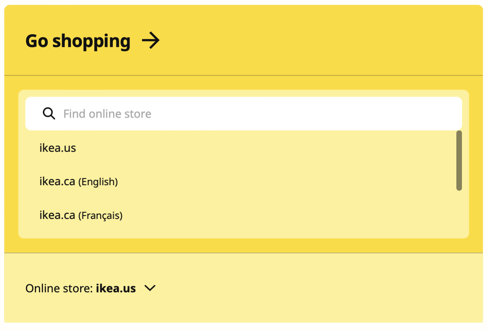

IKEA
Microinteraction Enhancement: Beta
BETA - INFORMATION
Triggers
- Hover over, off and click on the ‘Online store: ikea.us’ button
Rules
1. Hover over
- The cursor changes into a pointer
- When the mouse hovers over the 'Online store: ikea.us' button, its background fades into a light yellow.
2. When clicked
- When clicked, the caret turns upside down and the button moves downward, making room for the 'Find online store' search tool.
- The 'Find online store' search tool moves up from the bottom, underneath the 'Online store: Ikea.us' button.
- The text 'Go shopping' moves from the middle up to the top of the box.
3. Hover off
- When hovering off, the button's background changes back to yellow.
Feedback
1. Hover over
- The cursor changes into a pointer
- When the mouse hovers over the 'Online store: ikea.us' button, its background fades into a light yellow.
2. When clicked
- When clicked, the caret turns upside down and the button moves downward, making room for the 'Find online store' search tool.
- The 'Find online store' search tool moves up from the bottom, underneath the 'Online store: Ikea.us' button.
- The text 'Go shopping' moves from the middle up to the top of the box.
3. Hover off
- When hovering off, the button's background changes back to yellow.
Loops and Modes
Loops
Modes
- the 'Find online store' search tool appears when user clicks onto the button.
BETA - HOW IT WORKS

